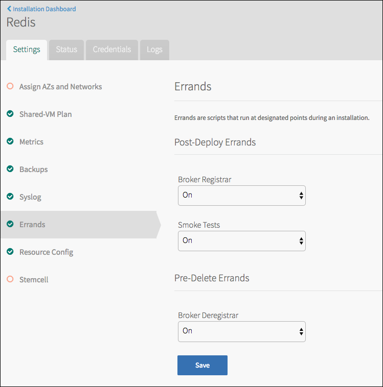

Errands
Lifecycle errands are BOSH errands (scripts) that run at the beginning and end of an installed product’s availability time. Product teams create errands as part of a product package, and a product can only run errands it includes.
For more information about BOSH errands, see BOSH documentation, and for more information about errands in Pivotal Cloud Foundry (PCF), see Managing Errands in Ops Manager.
In Ops Manager 2.0 and later, tile authors can choose to colocate errands on existing VMs. When errands are not colocated, BOSH deploys a new VM for each errand defined in the tile metadata. Colocated errands can run alongside other jobs or errands on existing VMs in an operator’s deployment.
Products can have two kinds of errands. Post-deploy errands run after a product installs but before Ops Manager displays makes it available for use. Pre-delete errands run after an operator chooses to delete a product, but before Ops Manager finishes removing it from use.
To save deployment time, operators can set errand run rules that dictate whether or not errands run. Tile authors can set defaults for these run rules.
Define a Colocated Errand
Note: Ops Manager 2.0 and later supports colocated errands.
Instead of deploying a new VM for each errand, colocated errands run on an existing VM. Errands can run alongside other jobs on a VM, and multiple errands can be colocated on the same VM. Colocated errands run faster than traditional errands and use fewer resources, including disk and IP space.
To configure a colocated errand, define the following properties in the pre_delete_errands and post_deploy_errands sections of the tile metadata:
| Property | Description |
|---|---|
name: MY-ERRAND |
Provide the name of the errand job. The example manifest in the following section uses example_colocated_errand. |
colocated: true |
Set this value to true to enable colocated errands. If you do not set this value, Ops Manager ignores all other errand attributes in this section. |
run_default: on |
(Optional) You can set the run rules to on, off, or when-changed. See Errand Run Rules for more information.If you do not define this property, Ops Manager sets the run default to on.
The operator can override this setting using the Ops Manager API or the tile’s Errand Config tab. |
instances: [] |
(Optional) Provide an array that tells BOSH where to run the errand.
Use the name of an instance group, such as web_server, or a single instance, such as web_server/first.If you do not define this property or you provide an empty array, the errand runs on every instance of the job in the operator’s deployment. |
label: ERRAND-LABEL |
Define the errand name to be shown in the tile’s Errand Config page and above Apply Changes.
The example manifest in the following section uses colocated errand on web_server. |
description: TEXT |
(Optional) Provide a description for the errand that appears in the tile’s Errand Config page. |
After defining the errand in the sections above, add the errand to the job properties in the job_types section.
Colocated Errand Example Manifest
The following example shows colocated post_deploy_errands and pre_delete_errands sections in the tile metadata:
post_deploy_errands:
- name: example-errand
colocated: false
- name: example_colocated_errand
colocated: true
run_default: on
instances:
- web_server/first
label: colocated errand on web_server
description: This errand does little more than print a message in order to prove colocated errands work.
pre_delete_errands:
- name: example-errand
The following example shows the colocated errands referenced within the job_type:
job_types:
- name: web_server
resource_label: Web Server
templates:
- name: web_server
release: example-release
provides: |
web_server_info: (( .properties.example_selector.selected_option.parsed_manifest(provides_section) ))
consumes: |
web_server_info: (( .properties.example_selector.selected_option.parsed_manifest(consumes_section) ))
- name: time_logger
release: example-release
- name: example_colocated_errand
release: example-release
release: example-release
static_ip: 1
dynamic_ip: 0
max_in_flight: 1
Post-Deploy Errands
Post-deploy errands run after a product installs, but before Ops Manager makes it available for use.
Typical post-install errands include smoke or acceptance tests, database initialization or database migration, and service broker registration.
Post-deploy errands run by default. An operator can prevent a post-deploy errand from running by setting its run rule to Off under Pending Changes in the Ops Manager Installation Dashboard or on the product tile’s Settings tab Errands pane, before installing the product.

For example, Redis has a Broker Registrar post-deploy errand that the Elastic Runtime tile uses to register its service broker with the Cloud Controller and publish its service plans.
If an operator chooses Off in the drop-down menu for Elastic Runtime’s Broker Registrar errand before installation, Elastic Runtime’s service broker is not registered with the Cloud Controller and its service plans are not made public.
Pre-Delete Errands
Pre-delete errands run after an operator chooses to delete a product, but before Ops Manager actually finishes deleting it.
Typical pre-delete errands include clean up of application artifacts and service broker de-registration. For example, Pivotal MySQL has a Broker Deregistrar pre-delete errand that:
- Purges the service offering
- Purges all service instances
- Purges all application bindings
- Deletes the service broker from the Cloud Controller
When an operator chooses to delete the Pivotal MySQL product, Ops Manager first runs the Broker Deregistrar pre-delete errand, then deletes the product.
Pre-delete errands run by default. An operator can prevent a pre-delete errand from running by setting its run rule to Off under Pending Changes in the Ops Manager Installation Dashboard or on the product tile’s Settings tab Errands pane, before installing the product.
Errand Run Rules
WARNING: In Ops Manager v1.10.0 and later, errands set to the When Changed rule do not always run when the tile has relevant changes. Instead of using When Changed, Pivotal recommends that tile developers leave the default run rule for errands as On and let operators use one-time rules to turn errands off and save deploy time.
Some errands do not always need to run. For example, installing a minor patch to a existing service might not require re-registering its broker. Ops Manager lets operators save installation time by turning errands off or on. They set these errand run rules in two places:
One-Time Rules under Pending Changes in the Ops Manager Installation Dashboard. These rules only apply to the next time you run Apply Changes and do not persist after the next successful installation.

Persistent Rules in the tile’s Errands pane. These rules persist through subsequent installations, until changed in the Errands pane.
For more information, see Configure Run Rules in Ops Manager.